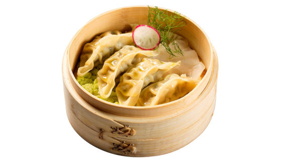
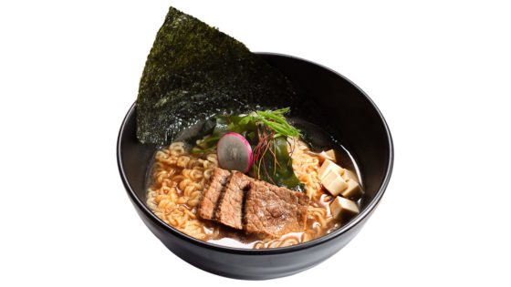
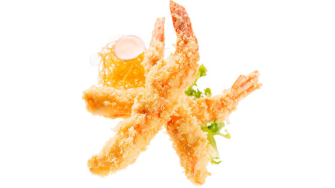
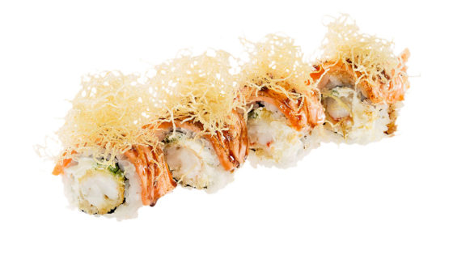
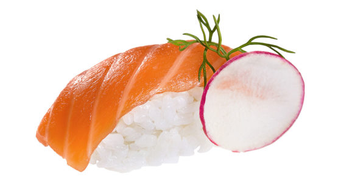
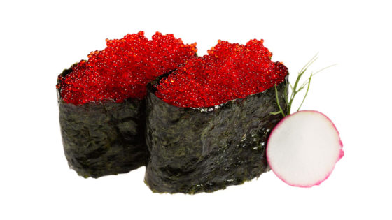
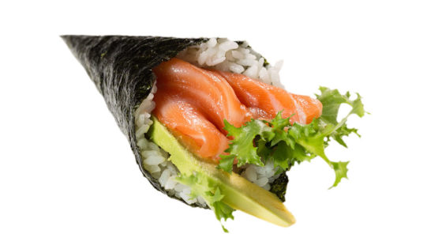
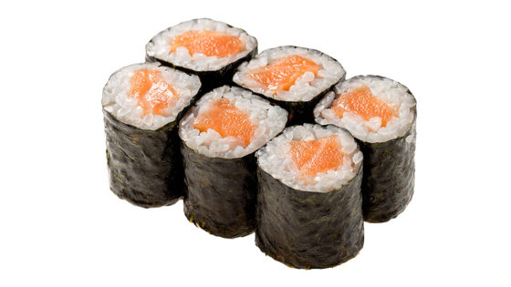
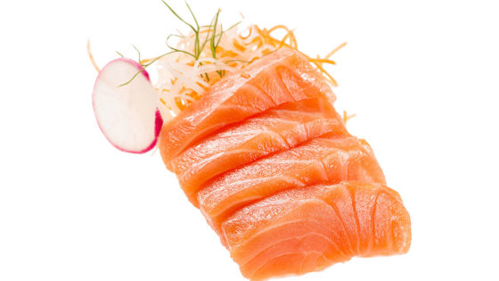
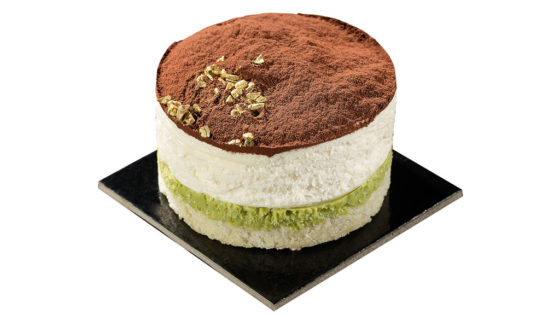

Lista delle categorie:
- Antipasti
-

Specialità della cucina giapponese leggeri da mangiare. Variano da piatti completamente composti da verdure a ravioli ripieni di carne fino a zuppe calde.
- Primi Piatti
-

Il ramen è un tipico piatto giapponese (ma di origine cinese) a base di tagliatelle di tipo cinese di frumento servite in brodo di carne e/o pesce, spesso insaporito con salsa di soia o miso e con guarnizioni come maiale affettato, alghe marine secche, kamaboko, negi e a volte mais. Ogni località del Giappone ha le proprie varianti di ramen per tutti i gusti e palati.
- Teppanyako e tempure
-

La cucina teppanyaki nasce dalla volontà di trovare il modo di cucinare e mangiare nello stesso "piatto", è un tipo di cottura della cucina giapponese. Il tempura è un piatto a base di verdure e/o pesce, impastellati separatamente e fritti.
- Uramaki
-

Gli uramaki sono rotolini di riso che avvolgono l’alga ed il pesce e sono spesso ricoperti da semi di sesamo tostati, tobiko o uova di pesce. Il ripieno è composto da due o più ingredienti tra pesce e verdure.
- Nigiri e Onigiri
-

Il nigiri è uno dei più semplici tra i vari tipi di sushi ed è composto da una pallina ovale di riso modellata a mano e una fettina di pesce sopra. Il pesce che compone il nigiri è principalmente: salmone, orata, tonno, anguilla, polpo, seppia, calamaro, granchio, gambero o frittata. Onigiri è un tipico cibo da strada giapponese che viene consumato passeggiando o come spuntino veloce. È composto da un triangolo di riso con un cuore ripieno principalmente composto da salmone e tonno.
- Gunkan
-

Il Gunkan è una particolare preparazione del nigiri. La specialità di questo varietà di sushi è che nella sua preparazione vengono utilizzati diversi ingredienti, ad esempio, le uova di pesce, la carne e le minuscole uova di quaglia.
- Temaki
-

Il temaki è il sushi più grande fra i vari tipi di sushi ed è di forma conica avvolto in una foglia di alga e ripieno di diversi ingredienti. Il temaki tradizionale è lungo 10 cm e va mangiato con le mani perché troppo grande da mangiare con le bacchette.
- Hosomaki
-

Gli hosomaki sono rotolini di riso ripieni di pesce o verdura avvolti in una foglia di alga nori. Gli hosomaki sono molto piccoli, per questo spesso vengono serviti almeno 6 pezzi a persona. Oltre agli hosomaki con pesce esistono anche gli hosomaki vegetariani e vegani con cetriolo, carota o avocado.
- Sashimi
-

Il sashimi è una pietanza composta da un unico ingrediente tra pesce o molluschi freschissimi, ma anche carne, il tutto tagliati a fettine sottili spesse circa 5-8 mm. Il sashimi è pesce crudo, senza l’aggiunta di spezie e alghe.
- Dessert
-

Assortimento di dessert sia locali che giapponesi per finire in bellezza.